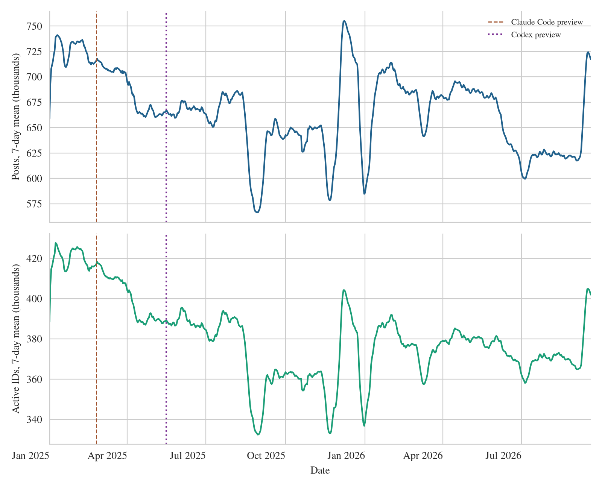

Observed Reddit posting around two coding-tool previews
What the supplied counts show, what they cannot establish, and how the five-page working paper changed through independent review.
Outcome
The working paper describes posting volume and concentration, then estimates local changes around the February 24, 2025 Claude Code and May 16, 2025 cloud Codex research-preview announcements. Neither primary 30-day estimate has a confidence interval excluding zero. Codex estimates change sign with the chosen window, so the paper treats the models as descriptions of this observed series.
Data and checks
The private Parquet file contains a 32-bit identifier, UTC date, and positive daily count. A 1% row-group prototype scanned 2,830,860 rows before the full scan. The full pass streamed 2,308 row groups and wrote separate aggregate outputs. The raw file was not changed and is ignored by Git.
| Measure | Result | Reading |
|---|---|---|
| Date span | 2006-04-23 to 2026-09-22 | 6,724 observed dates across 7,458 calendar days, leaving 734 unobserved dates. |
| Recent segment | 627 dates | Consecutive observed dates from 2025-01-01 through 2026-09-19. |
| Missing and key checks | 0 | Null cells, nonpositive counts, duplicate identifier-date rows, and sort-order violations. |
| Single-day identifiers | 20,531,556 | About 43.6% of identifiers occur on one observed date. |
| Posts per identifier | 2 median; 107 at p99 | The distribution is strongly concentrated. |
| Top 0.1% of identifiers | 22.47% of posts | 47,042 identifiers account for this share of observed posts. |
| High-count identifier-days | 1,213,143 | Each has at least 20 counted posts; the maximum daily count is 8,009. |
The last three source dates fall from 688,357 counted posts on September 19 to 9,470 on September 22. The trend figure stops on September 19 because those boundary dates appear incomplete. Event models use dates in 2025 and are unaffected by this exclusion. Earlier missing dates remain unobserved, rather than being entered as zero.

Announcement-window results
Each primary model uses 30 observed calendar days before and after its announcement, omits the announcement day, and fits log(1 + daily posts) with a linear time term, an immediate post-announcement level term, a post-announcement slope, and weekday indicators. The intervals use seven-lag heteroskedasticity and autocorrelation consistent standard errors. Two primary p values receive Holm adjustment.
| Announcement | Immediate modeled change | 95% interval | Holm p |
|---|---|---|---|
| Claude Code research preview, 2025-02-24 | +0.16% | -0.69% to +1.01% | 0.718 |
| Cloud Codex research preview, 2025-05-16 | -0.62% | -1.64% to +0.41% | 0.473 |
Excluding identifier-days with at least 20 posts removes 12.8% and 13.1% of posts in the two windows and changes the estimates to +0.14% and -0.47%. This is a day-level sensitivity check, not a bot classification. Across 14-, 21-, 30-, 45-, and 60-day windows, the Codex point estimate ranges from -1.37% to +2.48% and changes sign. A separate quadratic 30-day fit gives -1.59% for Codex. These variants do not support a stable product effect.
The announcement descriptions were checked against Anthropic and OpenAI. OpenAI had introduced its command-line tool in April 2025, so May 16 is the cloud research preview rather than first Codex availability. OpenAI later reported 3 million weekly Codex users in April 2026 and more than 5 million in June 2026. Anthropic reported a $1 billion Claude Code revenue run rate in December 2025. These sparse statements use different measures and dates, so they were not treated as a comparable adoption series or regressed against posting.
Literature and source checks
The literature search used Crossref's polite pool with a private contact address supplied for this task. Crossref metadata confirmed the two research-paper DOIs and bibliographic records. The claims were then checked against the Scientific Reports article and ACL Anthology paper. The first concerns online knowledge-community activity after ChatGPT, while the second estimates machine-generated text using a different dataset and text-based detection. Neither turns this file's count series into a direct bot measure. The contact address is not stored in this report or the project files.
Independent review and revisions
Two skeptics first reviewed the frozen initial paper. A statistics skeptic challenged the announcement-window design, window sensitivity, and missing dates. A platform skeptic challenged the interpretation of releases as adoption, uncertain collection coverage, and the meaning of high-count days. We added model and window sensitivity, named the cloud preview correctly, separated observed counts from platform claims, and retained unknown coverage as an explicit limit.
Round one
Three independent reviewers scored the same frozen draft 3, 4, and 4. The argument reviewer found a material layout defect, including a mostly empty page and a split sentence. The parent revised float placement, removed the compressed long-history figure from the manuscript, clarified count labels, shortened captions, corrected the Scientific Reports article number, and rebuilt the paper.
Round two
The three reviewers scored the same revised frozen PDF 4, 4, and 4, with no major findings. Final minor edits narrowed the research question, stated the effect of background variation, named the seven-day trailing mean in Figure 1, corrected the high-count day wording, removed distracting link borders, and kept the closing section together. The loop stopped at the agreed success threshold.
| Reviewer | Round one | Round two | Scope |
|---|---|---|---|
| Argument and research audience | 3 | 4 | Question, flow, claims, and page-scale readability. |
| Correctness and evidence | 4 | 4 | Generated counts, methods, cited claims, and inference limits. |
| Presentation and Nick Voice | 4 | 4 | Prose, abbreviations, figure and table readability. |
| Arithmetic mean | 3.67 | 4.00 | Success threshold reached with no major open finding. |
Effort and timing
The table records observed wall-clock intervals in UTC. Review tasks ran concurrently within each round. Individual model runtime, token use, and cost were not exposed, so none are estimated. A completion bound means all responses had arrived by that time, not that every reviewer used the whole interval.
| Work | Dispatch or start | Observed completion | Wall interval | Agents and model |
|---|---|---|---|---|
| Source inspection, prototype, full scan, research, initial paper | 2026-09-22 23:36:52 | Initial snapshot 23:45:32 | 8m 40s | Primary agent, GPT-6 Astra; local commands and source sites. |
| Initial skeptical review | 2026-09-22 23:45:32 | Both received by 23:50:50 | At most 5m 18s | Statistics and platform skeptics, GPT-6 Sol high reasoning. |
| Revision and round-one snapshot | After skeptical responses | 2026-09-22 23:54:21 | Not separately captured | Primary agent, GPT-6 Astra. |
| Round-one independent review | 2026-09-22 23:54:21 | All received by 23:57:22 | 3m 01s | Argument: GPT-6 Sol medium; correctness: GPT-6 Sol high; presentation: GPT-6 Luna high. |
| Revision and round-two snapshot | After round-one responses | 2026-09-23 00:00:58 | Not separately captured | Primary agent, GPT-6 Astra. |
| Round-two independent review | 2026-09-23 00:00:58 | All received by 00:03:51 | At most 2m 53s | Same three roles and model settings as round one. |
Round-one argument, presentation, and correctness responses arrived by 23:56:08, 23:57:08, and 23:57:22, respectively. Exact individual compute times were not available. The second-round completion time above is the first recorded check after all three responses had arrived.
Verification and reproducibility
- The sample prototype reached the row-group boundary logic before the first full scan. The full scan reconciled its row count with Parquet metadata and printed source shape, dates, counts, and data-quality checks.
- The two primary model point estimates were independently re-derived with NumPy least squares. The pipeline test covers aggregation across row-group boundaries.
- Generated LaTeX variables, the window table, and figures were rebuilt from derived results, then the paper was compiled.
- Every page of the final PDF and its figures was inspected at page scale. Figure pages were also rendered in actual grayscale. LaTeX warnings, page count, and source-file ignore status were checked.
Run commands and file roles are in the README. The review progress file links the three frozen snapshots and their reviewer notes. The full source remains private. Nothing in this report establishes collection coverage or identifies which posts were written by humans or software.